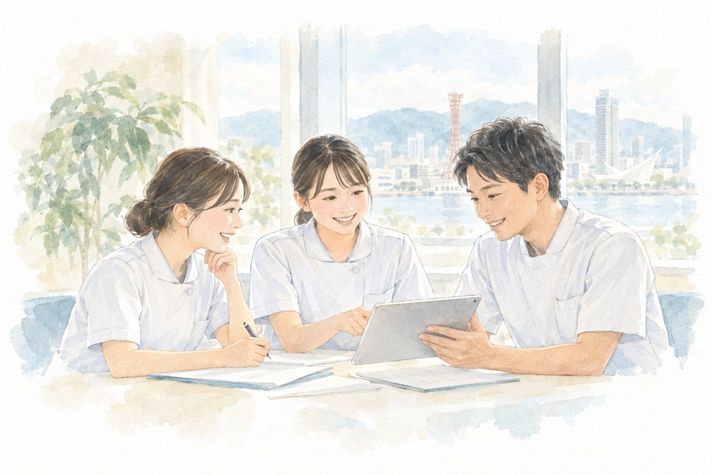

採用情報
こころに寄り添う看護を、一緒に届けませんか。
精神科が未経験の方や、子育て中の方も歓迎しています。

そのやさしさが、
だれかの支えに。
一緒に働く仲間を募集しています
Sun＋訪問看護ステーションでは、一緒に働く仲間を募集しています。精神科が未経験の方や、子育て中の方も歓迎しています。
同行訪問やケース共有を通じて、無理なく成長できるよう丁寧にサポートします。勤務時間や条件など、まずはお気軽にご相談ください。
募集要項
| 募集職種 | 訪問看護師（パート） |
|---|---|
| 仕事内容 | 神戸市・明石市のご利用者様のご自宅への訪問看護（精神科）。1日5〜6件程度。直行直帰可 |
| 必要な資格 | 看護師 |
| 雇用形態 | パート（有期雇用・契約更新あり・更新上限なし） |
| 給与 | 時給 2,000円 |
| 勤務時間 | 9:00〜18:00 のうち 1日4時間以上・週1日から相談可 |
| 休日 | 土曜・日曜・祝日、年末年始 |
| 保険 | 労災保険（勤務日数・時間により雇用保険・社会保険に加入） |
| 試用期間 | 3か月（同条件） |
| 就業場所・業務の変更の範囲 | 変更なし（事業所：〒651-2132 兵庫県神戸市西区森友1丁目12 ビタミンテラス枝吉101） |
| 年齢 | 不問 |
| 応募方法 | お電話またはお問い合わせフォームよりご連絡ください。面談の日程をご案内します。 |
掲載日：2026年9月25日（ハローワーク求人票 求人番号 28080-06930661 の内容にもとづく）
採用に関するご相談・ご意見（採用選考におけるハラスメント等を含む）は、管理者（山田）が窓口としてお受けします。TEL 078-962-8017

ひとりで抱え込まず、
まずはお気軽にご相談ください。
どんな小さなことでも構いません。
あなたやご家族の想いに、私たちが耳を傾けます。
今日より、
少しあたたかな明日へ。